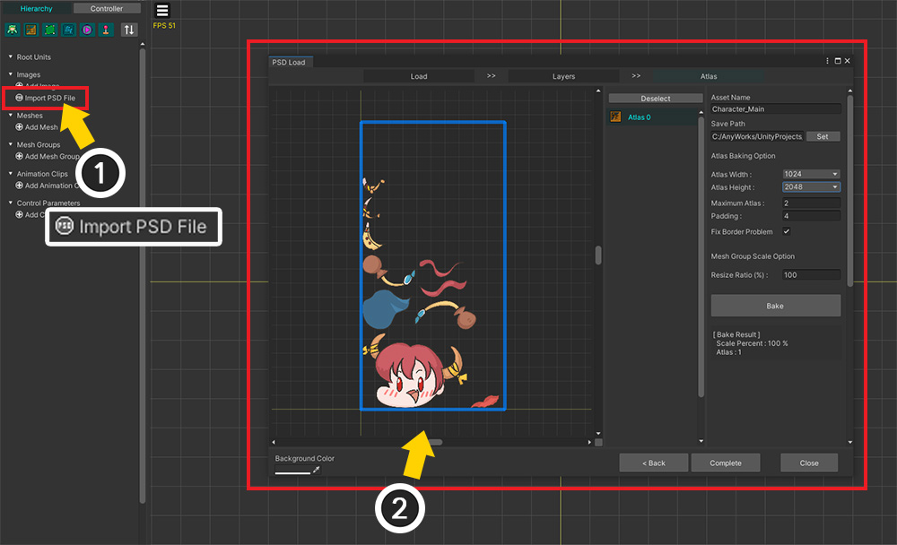
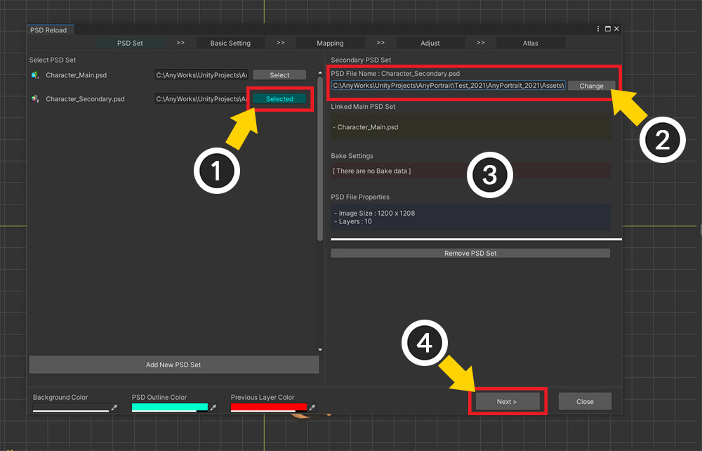
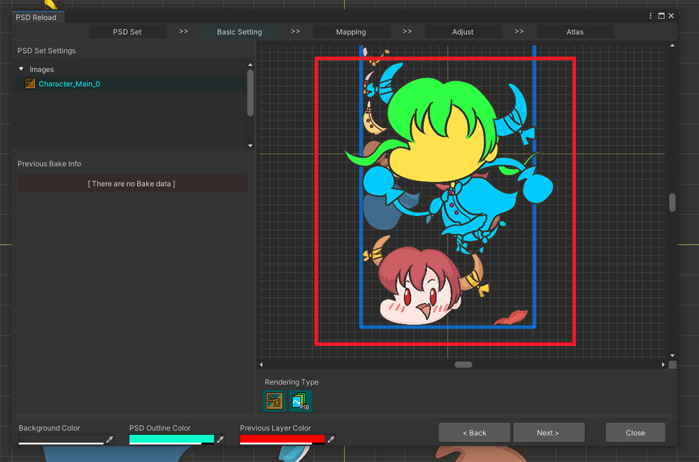
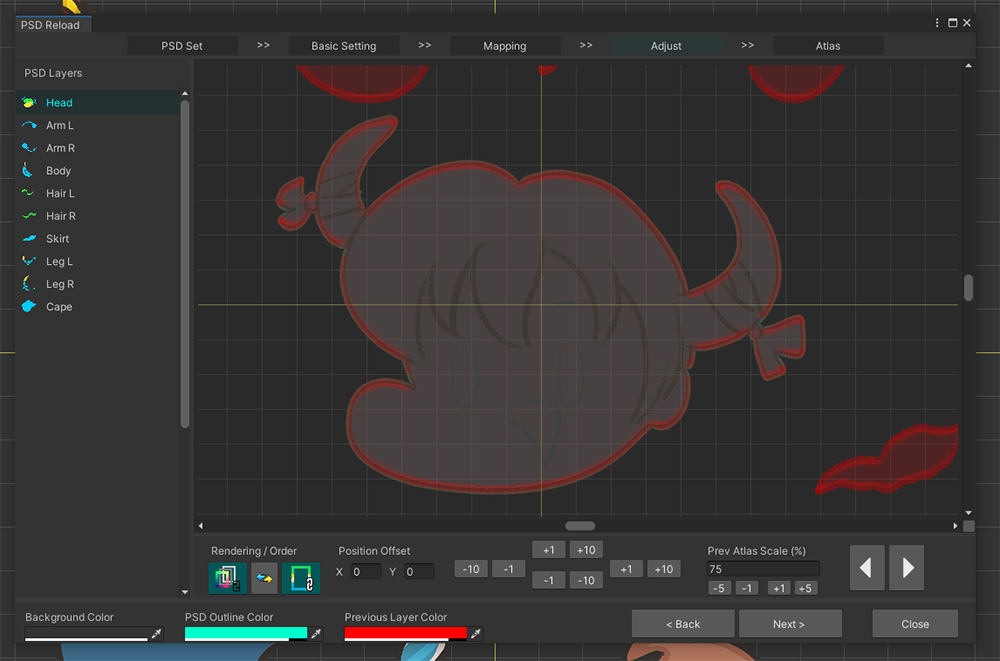
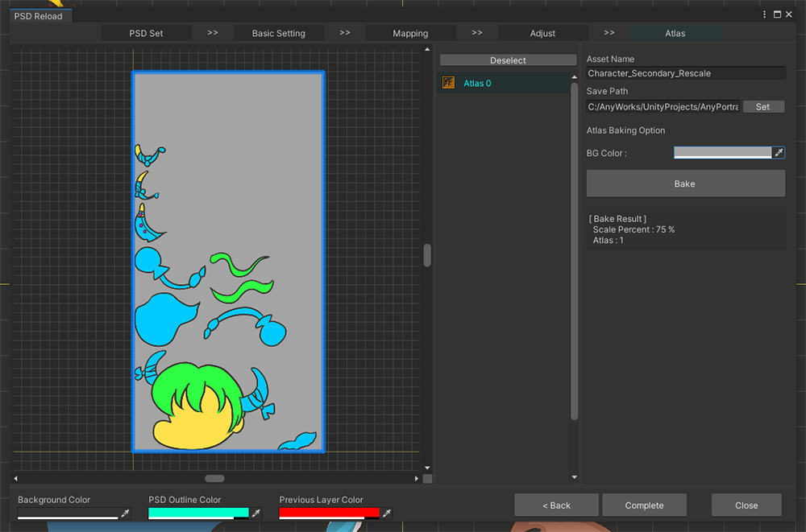
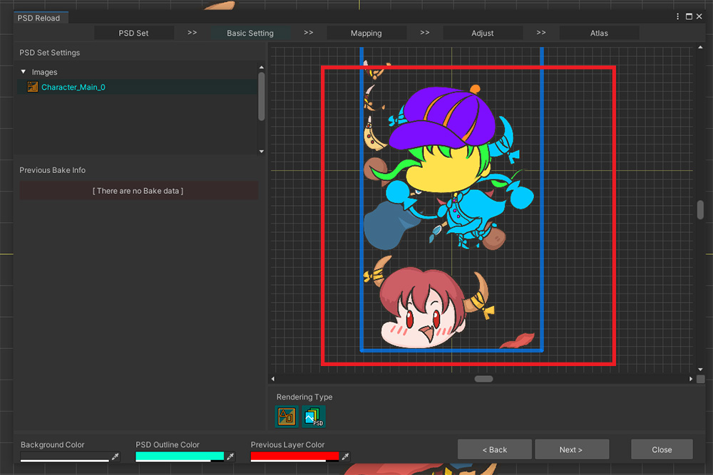

AnyPortrait > 메뉴얼 > Secondary Atlas 만들기
Secondary Atlas 만들기
1.4.0

게임 캐릭터를 렌더링하기 위해서는 기본 텍스쳐 외에도 여러가지 다양한 종류의 텍스쳐가 필요하기도 합니다.
재질의 물리적 특성, 요철, 마스크, 특수 효과 등을 텍스쳐에 적용하여 리소스를 만들고 이를 렌더링에 이용하곤 합니다.
또는 텍스쳐를 교체하여 캐릭터의 외형을 바꿀 수도 있습니다. (관련 페이지)
이러한 텍스쳐를 Secondary Texture라고 부릅니다.
특히 여러개의 레이어들이 하나의 텍스쳐에 합쳐진 Secondary Atlas를 만드는 경우가 많습니다.
이때, "모든 텍스쳐들이 동일한 구조의 Atlas를 가질 것"이라는 조건이 충족되어야 합니다.
AnyPortrait v1.4.0에 새롭게 추가된 기능인 "Secondary Atlas 생성하기" 기능을 이용하면 편리하게 동일한 구조의 Atlas 텍스쳐를 다른 PSD 파일로부터 만드는 것이 가능합니다.
이 기능은 "PSD 파일 다시 가져오기" 다이얼로그에 추가된 것이므로 해당 기능을 알아야 적절히 사용할 수 있습니다.
설명에 앞서 아래의 메뉴얼들을 미리 읽어보시길 바랍니다.
- PSD 파일 가져오기
- PSD 파일 다시 가져오기
참고
이 기능은 v1.4.0의 이전 버전과 호환되지 않습니다.
이전 버전에서 PSD를 가져와서 Atlas를 생성했다면, "PSD 파일 다시 가져오기" 기능을 이용하여 현재 버전에 맞게 Atlas 데이터를 생성해야합니다.
Secondary Atlas 만들기


설명을 위해 원본이 되는 PSD 파일과 Secondary Texture가 될 PSD 파일을 준비했습니다.
두개의 PSD 파일은 동일한 이름과 구성의 레이어들을 가집니다.
Secondary Atlas를 만들기 위해서는 기준이 되는 PSD 파일과 가능한 동일하거나 레이어 구성을 가져야 합니다.
물론, 이후의 매핑 기능을 통해 완전히 동일하지 않아도 텍스쳐 생성은 가능하지만, 레이어 이름까지 동일하게 파일을 준비하는 것을 권장합니다.

Secondary Atlas를 만들기 위해서는 기준이 되는 Main Atlas가 먼저 생성되어야 합니다.
(1) Import PSD File 기능을 이용하여 (2) Main Atlas를 생성합니다.

완성된 캐릭터입니다.
이제 이 캐릭터의 UV 정보와 호환되는 Secondary Atlas를 만들어봅시다.

(1) Import PSD File 버튼을 누릅니다.
(2) Reload PSD File 버튼을 누릅니다.

다이얼로그가 열리면 Main Atlas를 생성하면서 만들어진 "PSD 세트"가 등록되어 있습니다.
(1) 해당 PSD 세트를 선택합니다.
(2) Main Atlas와 관련된 정보를 확인할 수 있습니다.
(3) Make Secondary PSD Set 버튼을 누릅니다.
PSD 세트가 보이지 않거나 Secondary PSD 세트를 생성할 수 없어요!
v1.4.0보다 이전 버전에서 PSD 파일을 가져왔다면, 이 과정을 수행할 수 없을 것입니다.
해결 방법은, 동일한 PSD 파일을 그대로 다시 가져와서 Main Atlas를 다시 생성하는 것입니다.
동일한 PSD 파일을 다시 가져오는 방법은 관련 페이지에서 확인하세요.

선택된 PSD 세트의 정보를 이용하여 Atlas를 생성하는 "Secondary PSD 세트"가 생성되어 목록에 추가되었습니다.
(1) Secondary PSD 세트를 선택합니다.
(2) Secondary Atlas로 만들 두번째 PSD 파일을 엽니다. (Main Atlas로 만든 첫번째 PSD 파일을 여는 것이 아니므로 주의하세요!)
(3) PSD 파일 정보와 이전의 Bake 정보가 보여집니다. 현재는 Secondary Atlas를 생성한 적이 없으므로 Bake 정보는 없습니다.
(4) Next 버튼을 누릅니다.

(1) 원본이 되는 Atlas를 가진 이미지들이 나타납니다.
(2) 이전의 Bake의 기록이 나타납니다.
(3) 선택된 원본 Atlas의 이미지와 Secondary PSD 파일이 동시에 보여집니다.
(4) 화면에 PSD 파일이나 이미지가 어떻게 보여질지 여부를 결정하는 버튼들입니다.
(5) 파일이 모두 제대로 로드가 되었음을 확인했다면 Next 버튼을 누릅니다.

Secondary PSD 파일의 레이어와 Main Atlas의 원본 레이어를 연결하는 단계입니다.
1. Secondary PSD 파일의 레이어들 : Bake 여부와 어느 원본 레이어를 참조할지 설정할 수 있습니다.
2. 원본이 되는 Main Atlas의 레이어 정보 : 원본이 되는 PSD 세트에 저장된 데이터를 기반으로 원본 레이어들이 보여집니다.
3. Auto Mapping : 이름과 순서를 기반으로 레이어들을 자동으로 연결합니다.
4. Enable All / Disable All / Reset : 모든 Secondary PSD 세트의 레이어들을 대상으로 Bake 여부, 또는 원본 참조 여부를 변경합니다.
5. 연결 상태를 색상으로 보이기 : 색상을 이용하여 양쪽의 연결 상태를 보기 쉽게 알려줍니다.
6. 외곽선으로 미리보기 : 이 기능을 켜면 미리보기 화면에서 선택된 대상이 외곽선으로 렌더링됩니다.
7. 미리보기 화면 : 선택된 PSD 레이어의 이미지와 연결된 원본 Atlas를 출력합니다.

기본적으로는 이름을 기반으로 자동으로 연결됩니다.
하지만 만약 연결이 잘못 된 경우, 직접 레이어간의 연결을 다시 설정해야 합니다.
(1) 연결을 변경하고자 하는 Secondary PSD 파일의 레이어의 연결 버튼을 누릅니다.
(2) 연결하고자 하는 대상을 선택합니다.
연결이나 Bake 여부를 모두 설정했다면 (3) Next 버튼을 눌러서 다음 단계로 넘어갑니다.

이 단계는 번거롭지만 매우 중요합니다.
동일한 UV를 공유하도록 만들기 위해 각각의 레이어들의 위치와 크기를 보정해야하기 때문입니다.
이 화면은 다음과 같이 구성되었습니다.
1. Secondary PSD 파일의 레이어들 : Bake의 대상이 되는 PSD 레이어들입니다.
2. 미리보기 화면 : 선택된 레이어와 원본 레이어가 출력됩니다. 이 화면을 보면서 위치와 크기를 보정해야합니다. 마우스 휠클릭, 드래그 등으로 이동, 확대 등을 할 수 있습니다.
3. Rendering / Order : 미리보기 화면에서의 렌더링 방식과 출력 순서를 변경합니다.
4. Position Offset : 선택된 Secondary PSD 레이어의 위치를 변경하는 도구들입니다.
5. Prev Atlas Scale : 원본 Atlas 대비 현재 PSD 파일에 설정되어야 하는 크기 값입니다. 파일 단위로 설정되므로 모든 레이어에 일괄적으로 적용됩니다.
6. 레이어 전환 버튼 : 이전, 다음 레이어를 선택합니다.

레이어를 선택했을 때, 만약 위와 같이 위치가 서로 겹치지 않는다면, Atlas로 만들었을 때 같은 UV를 가지지 못할 것입니다.
위치와 크기를 보정해서 서로 완벽히 겹쳐지도록 만들어야 합니다.

(1) 미리보기 화면에서 렌더링 방식을 변경하여 외곽선이 보이도록 만들거나 순서를 변경하여 편리하게 작업할 수 있도록 준비합니다.
(2) 현재 원본 Atlas가 뒤에서 보여지고, 앞에서는 Secondary PSD 레이어가 푸른색 외곽선과 함께 보여집니다.
(3) 이제 위치, 크기 보정 도구를 이용하여 두개의 레이어 이미지들이 완벽히 겹쳐지도록 만들어봅시다.

(1) 두개의 레이어가 완벽하게 겹쳐진 상태입니다. 이 상태라면 문제없이 Secondary Atlas를 생성할 수 있을 것입니다.
(2) 이전/다음 버튼을 누르거나 (3) 레이어 목록에서 이어서 작업할 Secondary PSD 레이어를 선택합니다.

모든 레이어에 대해서 "겹치기 작업"을 마무리했다면 (1) Next 버튼을 눌러서 마지막 단계로 넘어갑니다.

최종적으로 Secondary Atlas 정보를 이용하여 텍스쳐 에셋을 만드는 단계입니다.
PSD 파일을 가져오는 다른 UI와 다르게 Bake와 관련된 옵션들이 대부분 존재하지 않습니다.
원본의 PSD 세트에서의 정보를 그대로 활용하기 때문에, 텍스쳐 개수나 크기, 여백 등을 설정하지 않습니다.
(1) 저장될 Secondary 텍스쳐 에셋 이름과 경로를 설정합니다. (Assets의 하위 폴더 내에 위치해야 합니다.)
(2) Bake 버튼을 눌러봅시다.

Secondary Atlas가 완성되었습니다.
Main Atlas와 동일하게 구성된 것을 확인할 수 있습니다.

Secondary Atlas는 어떻게 활용되느냐에 따라 배경색을 다르게 지정해줘야 합니다.
(예를 들어 노멀맵의 배경은 옅은 청색이고 마스크맵의 배경은 검은색인 것처럼 용도에 따라 다른 배경색을 가집니다.)
(1) BG Color를 선택하고 적절한 색상을 선택합니다. Alpha도 같이 지정합니다.
(2) Bake 버튼을 다시 누릅니다.

배경색까지 적용된 결과입니다.

(1) Complete 버튼을 눌러서 텍스쳐 파일을 생성합니다.
(2) 작업이 완료되면 결과 다이얼로그가 나타납니다. Okay 버튼을 누릅니다.

Secondary Atlas은 텍스쳐 에셋으로만 생성되고, AnyPortait 에디터에는 등록되지 않습니다.
완성된 에셋을 유니티 에디터의 Project 탭에서 확인해봅시다.
(1) 설정한 경로에서 생성된 Secondary Atlas 텍스쳐 에셋을 찾을 수 있습니다. 자동으로 선택되어 있을 것입니다.
(2) 두개의 텍스쳐 에셋을 비교하면 완전히 동일한 Atlas 구조를 가진 것을 확인할 수 있습니다.

완성된 Secondary Atlas입니다.
이제 UV가 호환되는 두개의 텍스쳐를 가지고 재미있는 렌더링 결과를 만들어보세요!
원본이 되는 PSD 세트를 수정했을 경우
만약, Secondary PSD 세트를 만든 이후에 원본이 되는 PSD 세트를 선택하여 다시 Atlas를 만들었다면, 그 PSD 세트로부터 만들어진 모든 Secondary PSD 세트는 사용될 수 없습니다.
기존의 Secondary PSD 세트는 삭제하고, 새로운 Secondary PSD 세트를 만들어서 위 과정을 모두 다시 수행해야합니다.
PSD 파일의 크기가 서로 다른 경우

만약 불러오고자 하는 Secondary PSD 파일의 이미지가 원본 PSD 파일과 크기가 다르다면, 크기 보정 작업을 더 주의깊게 해야합니다.

위 이미지는 앞서 설명된 Secondary PSD 세트 생성에 대한 과정을 동일하게 진행하여 위치, 크기 보정 단계의 화면입니다.
Secondary PSD 레이어의 이미지가 원본 Atlas의 레이어 이미지보다 큰 것을 볼 수 있습니다.

(1) 작업이 편리하게 미리보기 화면의 설정을 변경합니다.
(2) 위치 보정 도구는 물론이고, 크기 보정 도구를 활용하여 두 이미지가 완벽하게 겹쳐지도록 만듭니다.

위와 같이 크기 및 위치를 조정하여 이미지가 겹쳐지도록 만들어야 합니다.
이미지의 크기는 모든 레이어에 동일하게 적용되므로, 한번만 크기를 맞춘다면 다른 레이어들에 대해서는 위치 보정만 하면 될 것입니다.

PSD 파일들의 크기는 달랐지만, 적절히 크기가 보정되어 완성된 Secondary Atlas는 동일한 구성으로 만들어졌습니다.
이미지의 형태가 바뀐 경우

색상 정보를 이용하여 특수하게 렌더링을 하고자 할 때 주로 Secondary Atlas를 이용할 것입니다.
하지만 만약 "캐릭터의 의상을 교체하기"와 같은 목적으로 텍스쳐를 만든다면, 위와 같이 일부 레이어의 형태가 아예 바뀔 수도 있을 것입니다.
하지만 이것은 제대로 Atlas를 생성하지 못할 가능성이 있습니다.
특히 원본의 이미지의 크기보다 Secondary Texture의 이미지의 크기가 더 클 경우엔, 이미지가 잘려버릴 수 있습니다.

"Head" 레이어의 이미지가 변경된 PSD 파일을 이용하여 Secondary PSD 세트를 만든 화면입니다.

한개의 이미지의 형태가 바뀐 것 외에는 모든 구조나 크기가 동일합니다.

"Head" 이미지의 형태가 바뀌면서 위치를 보정할 필요가 생겼습니다.
위와 같이 이미지간의 공통 부분이 겹치도록 위치를 보정해보았습니다.
모자 부분을 제외하고는 나머지 이미지가 겹친 것을 볼 수 있습니다.

하지만 Atlas를 Bake를 하니 "Head" 이미지의 일부가 잘려진 것을 볼 수 있습니다.

Main Atlas에서 "Head"에 해당하는 영역이 충분히 크지 않았기 때문에, Secondary Atlas에서는 잘려진 레이어가 생긴 것입니다.
이와 같이, 교체되는 이미지들의 형태가 바뀔 수 있다면, Main Atlas를 생성할 때 예상되는 이미지의 크기에 맞게 미리 충분히 큰 여백을 설정해야할 것입니다.